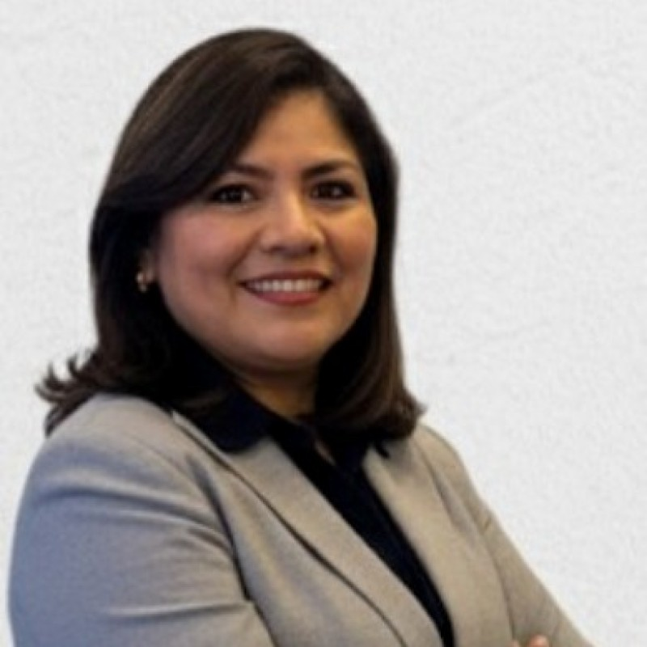

Acerca de IFIS
Impulso Financiero Sostenible Consultores Auditores (IFIS) es una firma de servicios
profesionales con destacada experiencia en normas internacionales de contabilidad (IFRS),
auditoría, aseguramiento y sostenibilidad. Ofrecemos servicios de alta calidad bajo los
más elevados estándares profesionales.
IFIS provee servicios de auditoría, impuestos, asesoría, outsourcing y consultoría
gerencial, proporcionando soluciones simples ante problemas complejos en diferentes
industrias. Estamos presentes en el desarrollo sostenible de las empresas, fortaleciendo
la transparencia y la confianza para crear valor a mediano y largo plazo.
Conoce a nuestras líderes
Ilis Bermúdez de Di Censo
Socia Fundadora IFIS | Santiago de Chile
- Contador Auditor y Magister Scientiarum en Gerencia Financiera.
- Máster de Formación Permanente en Finanzas Sostenibles y Compliance Financiero.
- Certificada en IFRS por ICAEW.
- Académica titular en IFRS, incluyendo normas IFRS S1 y S2.
Cuenta con más de 35 años de experiencia en KPMG y trayectoria regional en práctica
profesional de auditoría, IFRS y aseguramiento en ESG.

Denisse Daza de Aguilar
Socia Fundadora IFIS | Santiago de Chile
- Contador Auditor y Máster en Finanzas Sostenibles y Compliance Financiero.
- Certificada en Reporting con estándares GRI.
- Miembro del Comité Permanente de Sostenibilidad de GLENIF.
- Directora de la Comisión de Estudios IFRS y Sostenibilidad en Chile.
Académica titular y ex gerente de IFRS en KPMG Chile, con amplia experiencia en
control interno, auditoría interna y planificación estratégica.